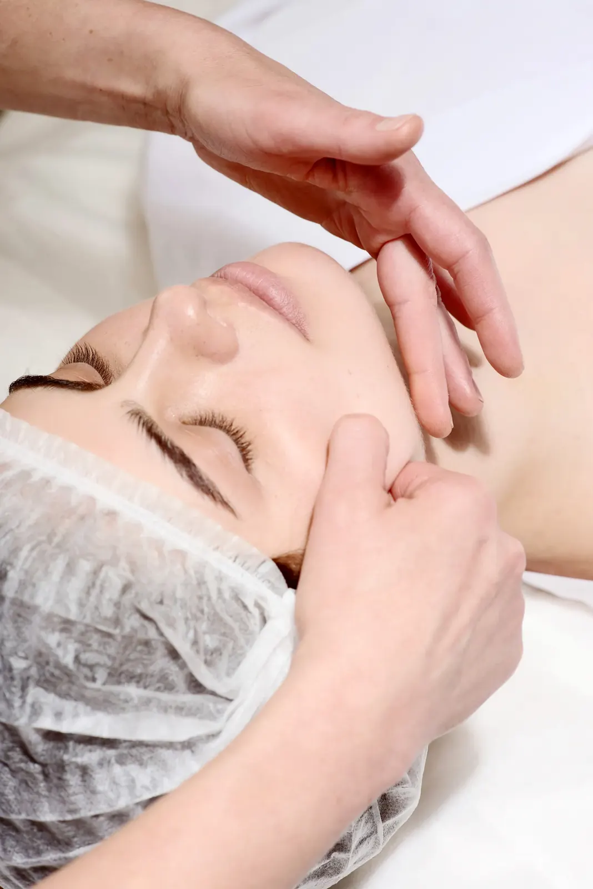

Главная ошибка перед праздником — записаться на всё сразу за два дня. У многих процедур эффект развивается неделями, а после некоторых коже нужно время на восстановление. Поэтому план лучше начать в середине ноября и двигаться от самых «долгих» процедур к самым быстрым.
Почему начинать нужно заранее
Многие аппаратные процедуры работают через собственный коллаген кожи. Коже нужно время, чтобы его выработать, поэтому эффект виден не сразу, а через несколько недель. После инъекций бывают небольшие отёки и синяки, после пилингов — шелушение. Если оставить всё на последнюю неделю, к празднику вы получите не результат, а период восстановления.
За шесть-восемь недель: середина ноября
Это время для процедур с накопительным эффектом.
- SMAS-лифтинг HIFU. Ультразвук прогревает глубокий опорный слой кожи. Контур подтягивается постепенно, итоговый результат обычно оценивают через несколько недель. В наших центрах — на аппаратах Ultraformer и Liftera-A, от 30 000 ₽.
- Курс биоревитализации. Обычно это несколько процедур с интервалом в две-три недели, поэтому начинать стоит сейчас. От 7 100 ₽ за процедуру. Чем она отличается от мезотерапии и плазмотерапии — в отдельном материале.
- Пилинги. После срединных пилингов кожа может шелушиться несколько дней. Пилинги BioRePeel и PRXt33 — от 11 900 ₽.

За две-четыре недели: начало декабря
- Ботулинотерапия. Эффект проявляется в течение двух недель, поэтому позже середины декабря её лучше не планировать. Если это первая процедура, оставьте время на контрольный визит.
- Контурная пластика. После инъекций может быть отёчность, обычно она проходит за несколько дней, но лучше иметь запас.
- RF-лифтинг без игл — мягкая процедура для тонуса кожи, её можно повторить ближе к празднику. От 9 400 ₽.
За неделю: процедуры без восстановления
В последнюю неделю делайте только то, после чего можно сразу выйти в свет.
- Аппаратное очищение HydraFacial — глубокое очищение и увлажнение, кожа выглядит свежей сразу. От 19 500 ₽.
- Уходы — например, 111SKIN от 6 500 ₽ или авторский уход Aldo Coppola.
- Микротоки — для тонуса и отёчности, от 10 300 ₽.

Накануне праздника
Лицу — только уход и макияж. Новые процедуры, даже «безобидные», за день до события — лишний риск: непредсказуемая реакция кожи никому не нужна. Зато самое время для маникюра, укладки и макияжа: в центрах Aldo Coppola их можно сделать одновременно, за один визит.
| Когда | Что | Почему именно тогда |
|---|---|---|
| 6–8 недель | HIFU, курс биоревитализации, пилинги | эффект нарастает неделями, после пилинга нужно восстановление |
| 2–4 недели | ботулинотерапия, контурная пластика | эффект развивается до двух недель, отёки успевают пройти |
| 3–7 дней | HydraFacial, уходы, микротоки | восстановление не нужно |
| 1 день | маникюр, укладка, макияж | только то, что не затрагивает кожу лица |
Вопросы и ответы
Можно ли сделать биоревитализацию за неделю до праздника?
Можно, но на коже могут остаться следы от уколов — небольшие папулы, которые обычно проходят за несколько дней. Надёжнее делать процедуру за две недели и раньше.
Когда последний срок для ботулинотерапии?
Эффект развивается до двух недель, поэтому лучше успеть до середины декабря.
Что сделать, если до праздника осталось три дня?
Выбрать процедуры без восстановления: HydraFacial, уход по типу кожи, микротоки. И, конечно, маникюр и укладку.
Источники
- Прайсы центров красоты Aldo Coppola, ноябрь 2026. Цены указаны «от» и зависят от зоны и салона.
- Американская академия дерматологии (AAD): рекомендации по подготовке к процедурам
Имеются противопоказания. Необходима консультация специалиста.